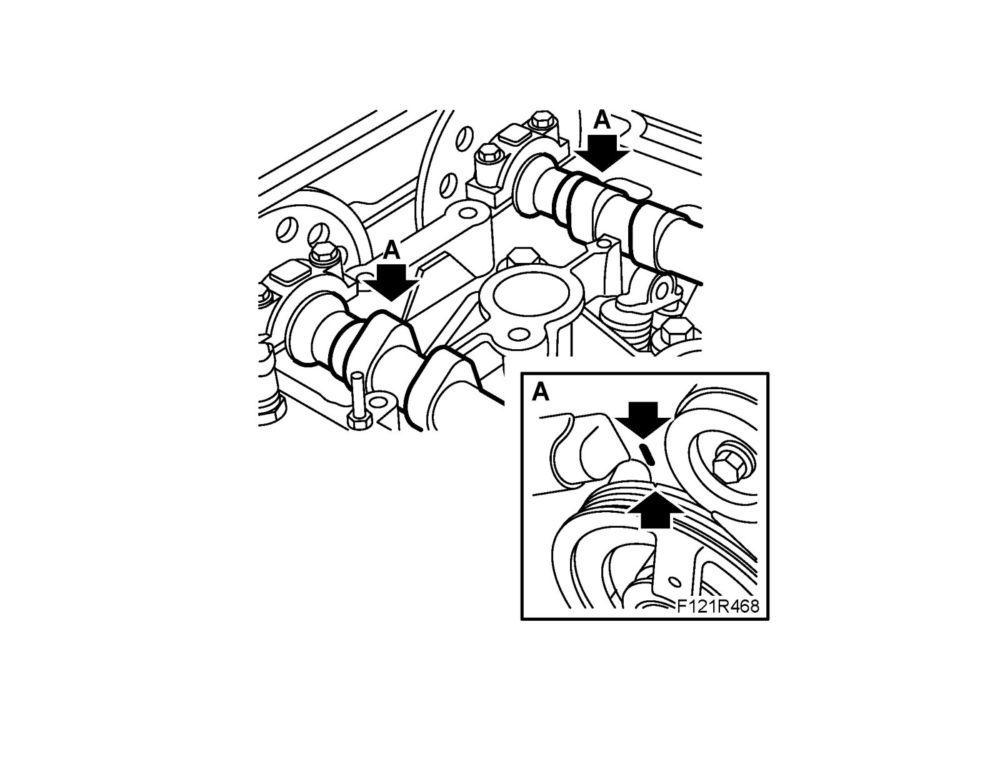
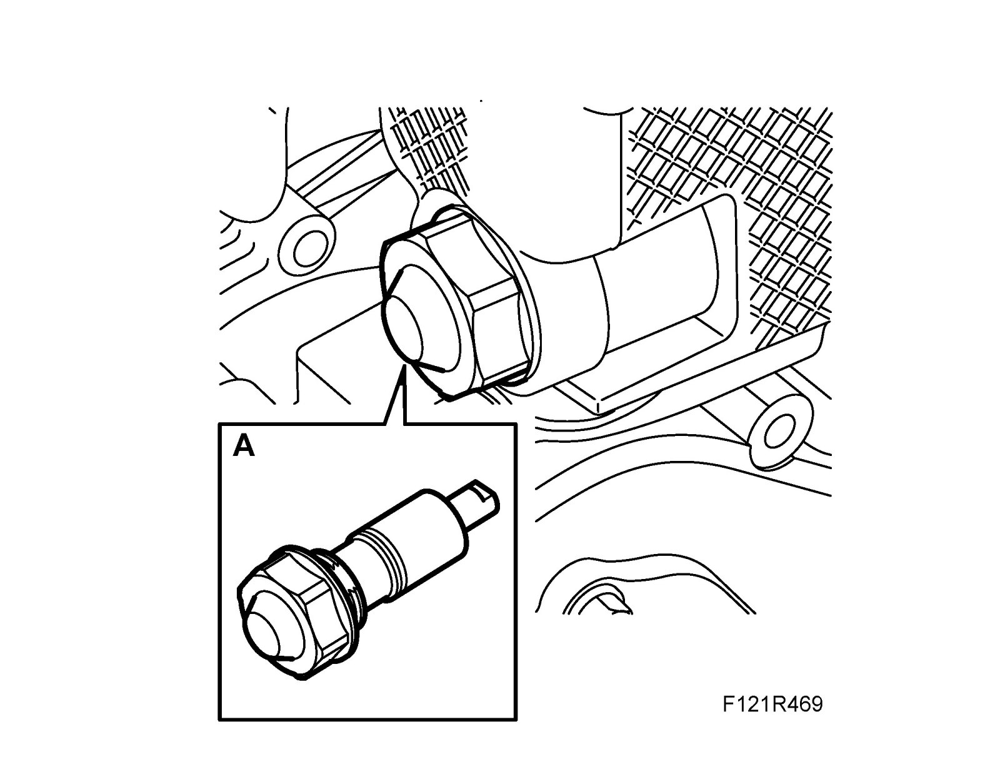
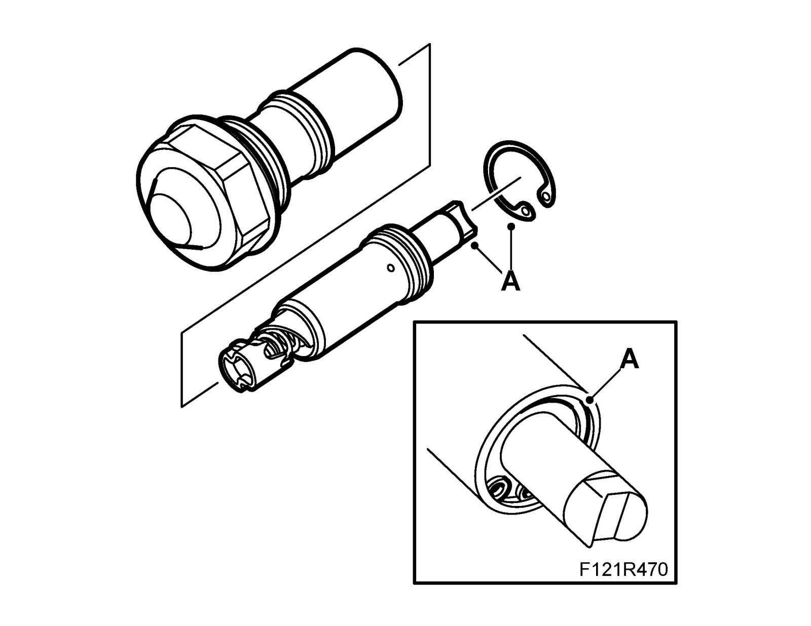
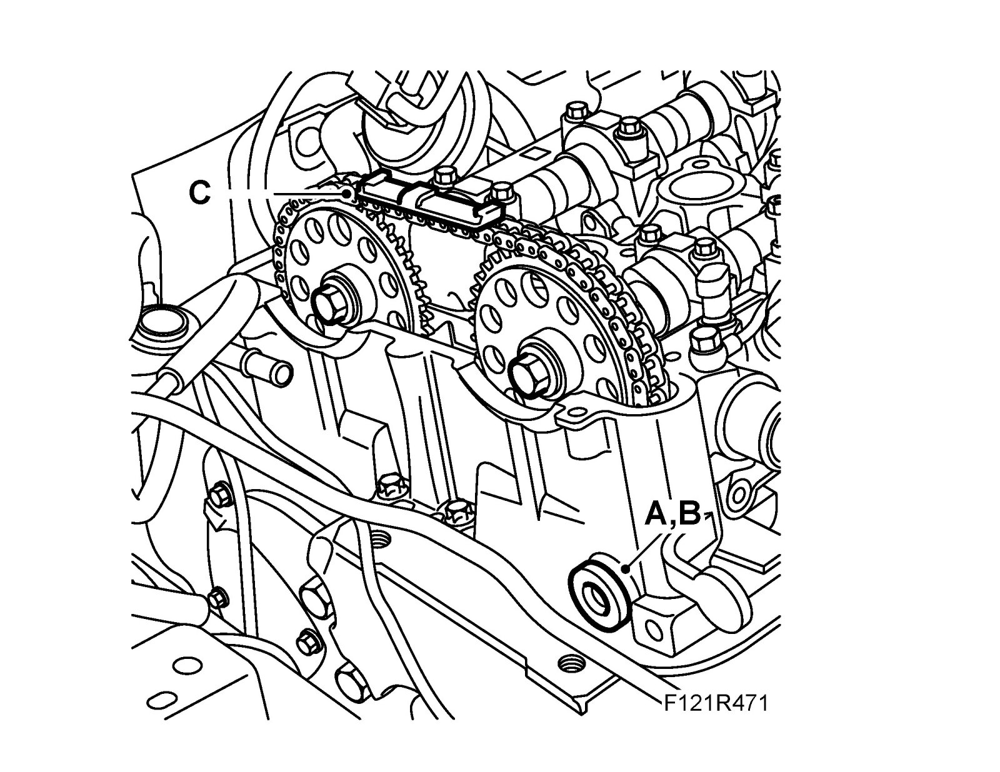
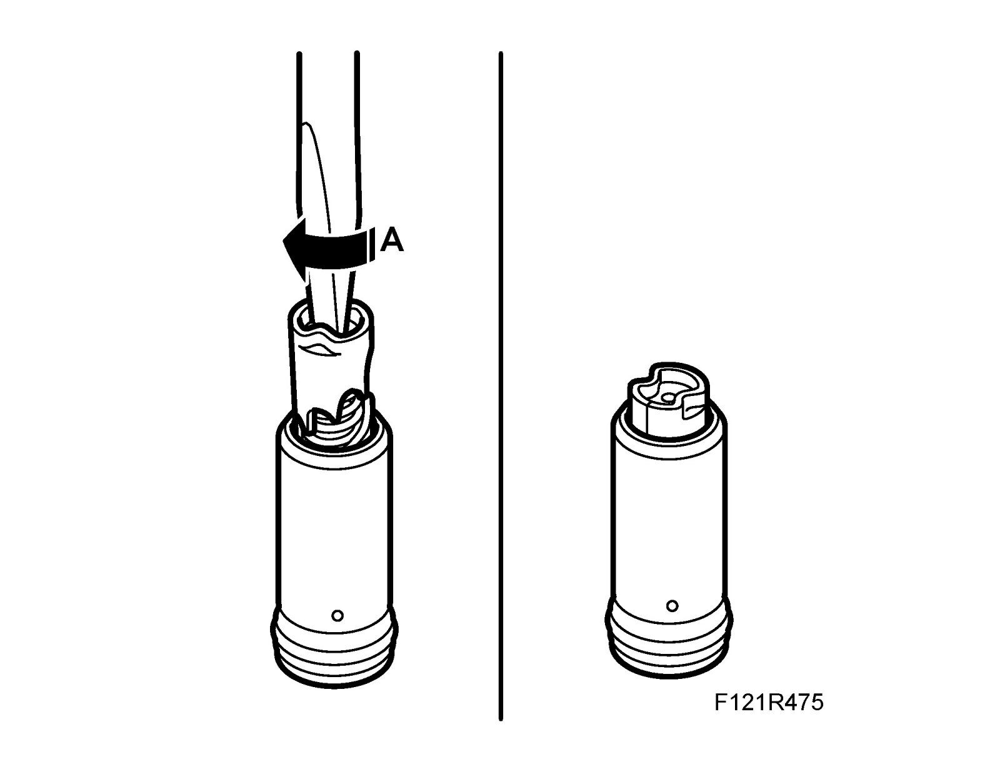
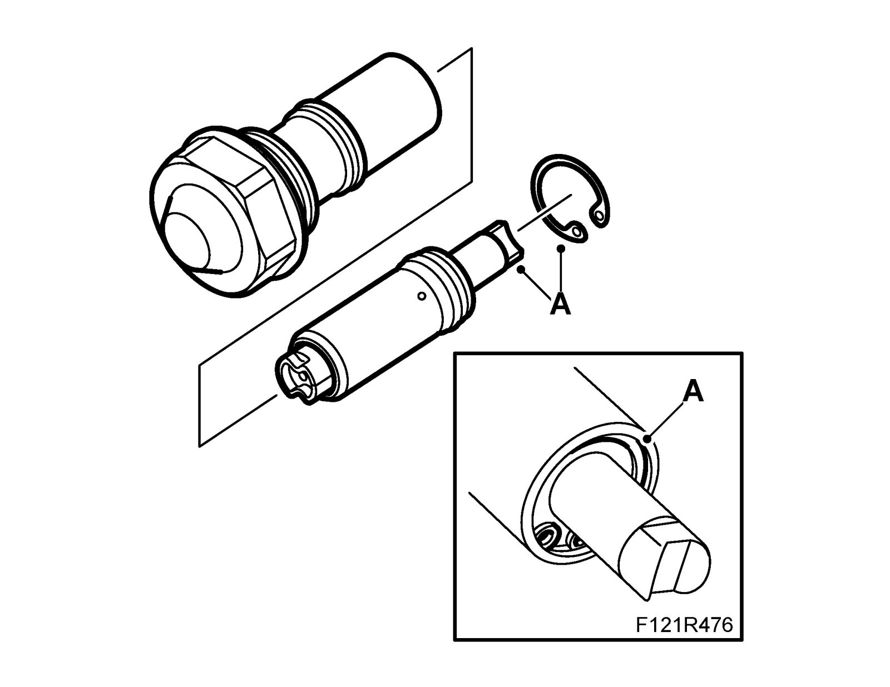
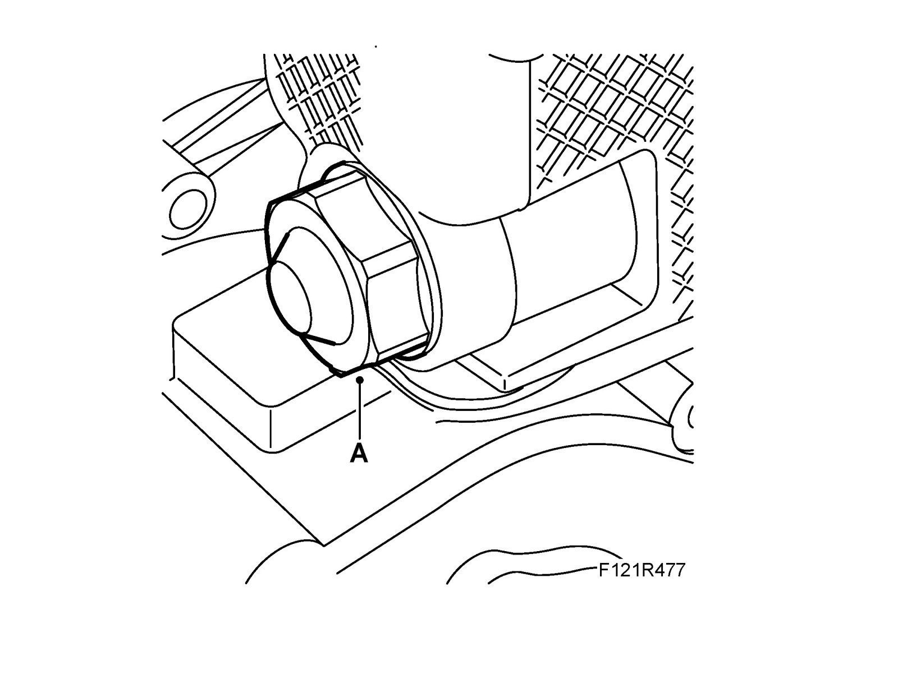
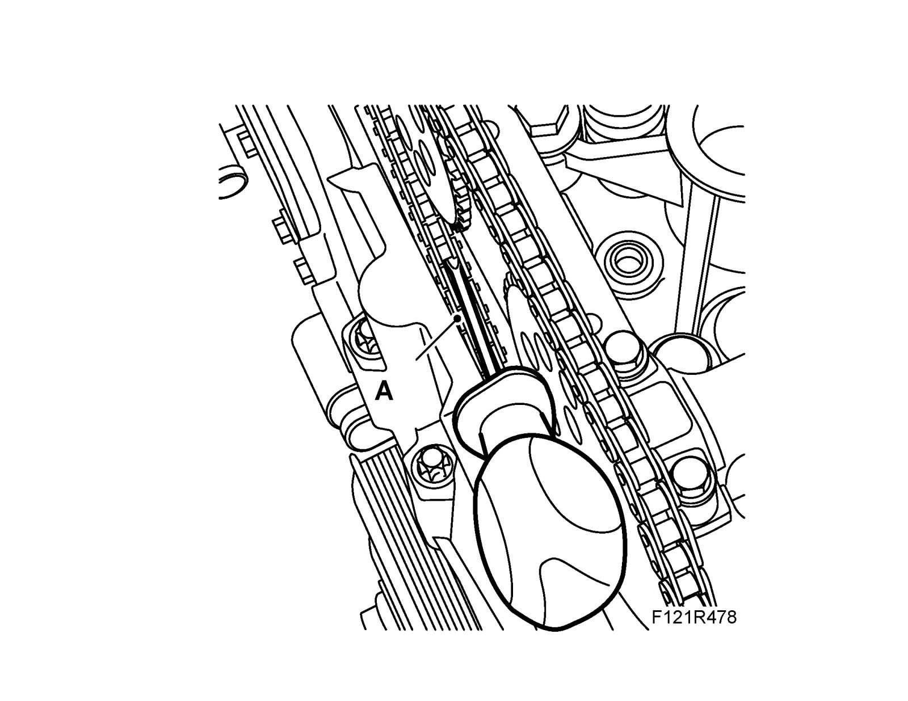
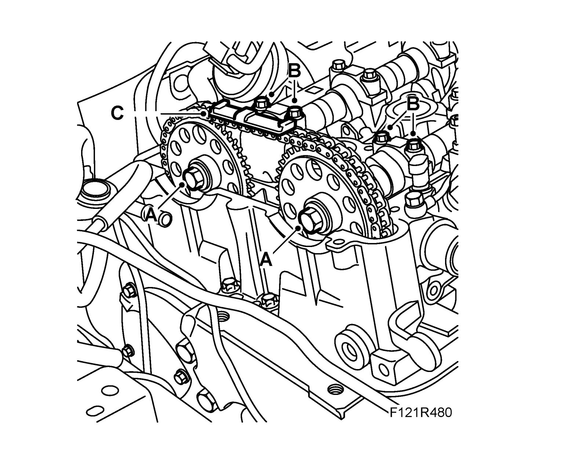

Camshaft Sprocket
Camshaft sprocketTo remove
1. Remove the Camshaft cover with gasket
2. Remove the right-hand Wing liner, front
3. Lower the car and zero the engine by turning the crankshaft in the direction of rotation of the engine until the marking on the crankshaft pulley is aligned with the marking on the timing cover. The cam lobes on cylinder 1 intake and exhaust camshafts should be pointing up/in (A)

4. Remove the chain tensioner (A). Use 83 96 129 Oil filter tool, and camshaft drive chain tensioner

5. Remove the lock ring (A) from the chain tensioner and remove the piston.

6. Remove the timing chain's upper guide rail (C).

7. Remove the camshaft pinions. Grip the camshaft flats with a spanner when loosening the bolts.
To fit
1. Clean the camshaft and sprocket (A) contact surfaces from oil and grease.

2. Align the chain on the pinions, fit the pinions on the camshaft and fit the bolts. Turn the camshaft drive tensioner clockwise with a screwdriver (A) until it engages in the tensioned position.

3. Place the plunger in the chain tensioner sleeve. Fit the circlip (A) and check that it is fitted correctly in the groove.
Note
Check that the O-ring and gasket are intact. If damaged, replace the chain tensioner assembly.

4. Fit the chain tensioner (A).
Tightening torque 75 Nm (55 lbf ft)

5. Release/activate the chain tensioner by carefully pressing on the timing chain or chain guide (as shown in the illustration). Use a screwdriver (A). Check that the tensioner has released.

6. Remove the exhaust camshaft and intake camshaft bearing caps no. 2 and no. 7. Position EN-48368 Adjustment tool, camshaft (210 hp) and EN-48366 Adjustment tool, camshaft (150 - 175 hp) by manually pressing the tools down onto the camshafts without tightening the bolts. Rotate the camshaft until the tool aligns with the spanner on the camshaft flats. Tighten the adjustment tools' bolts (A).
Tightening torque 10 Nm (7 lbf ft)

7. Check that the markings on the crankshaft pulley and the timing cover are aligned. Tighten the camshaft gears a first time. Use a wrench to grip the camshaft flats (A).
Tightening torque 30 Nm (22 lbf ft)

8. Remove the adjustment tools and fit the bearing caps (B).
Tightening torque 8 Nm (6 lbf ft)
9. Continue to tighten the camshaft gears to the final torque. Use a wrench to grip the camshaft flats (A).
Tightening torque 85 Nm + 30° (63 lbf ft +30°)
10. Rotate the crankshaft 2 turns in the direction of engine rotation until the mark on the crankshaft pulley agrees with the mark on the timing cover. Remove the bearing caps and fit EN-48368 Adjustment tool, camshaft (210 hp) and EN-48366 Adjustment tool, camshaft (150 - 175 hp) again to check that the camshaft setting is correct. Remove the adjustment tools and refit the bearing caps.
Tightening torque 8 Nm (6 lbf ft)
11. Fit the timing chain's upper guide rail (C).
12. Fit the Camshaft cover with gasket
13. Fit the right-hand Wing liner, front
14. Fit the right-hand front wheel.
15. Lower the car completely. Check the engine's oil level.
16. Top up as necessary.